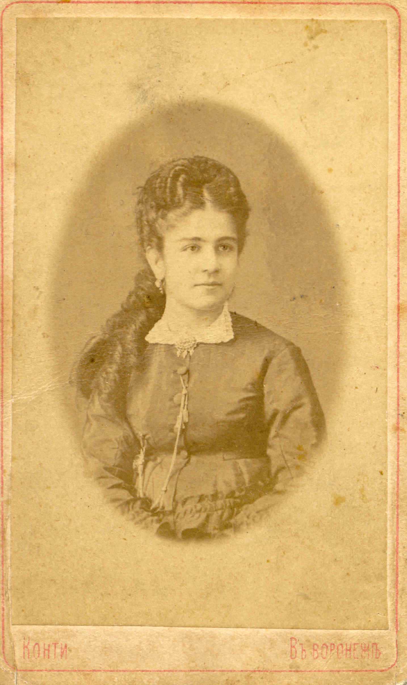
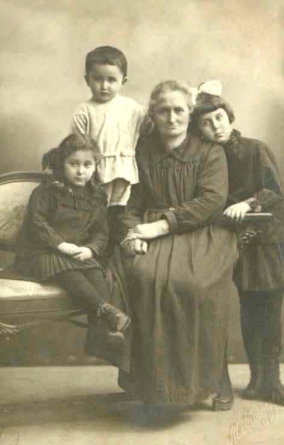

|
 |
Родилась 1861(?) году.
Вышла замуж за Баккала Эльезера Ильяговича
Родила трех сыновей:
Соломона,
Абрама (Бориса),
Исаака
и пять дочерей:
Сарру,
Ханну (Анну),
Рахиль,
Ревеку (Иру),
Эстер (Стешу).
Умерла в 1943 году в Симферополе.
В 1943 году умерла папина мама - моя вторая бабушка, которая последнее время жила вместе с нами. Бабушка Ля была благородным, очень чутким и впечатлительным человеком. Несомненно, обладала незаурядными способностями, которые давали ей возможность входить в близкий контакт с внуками. Была для нас, ребятишек, настоящим ангелом доброжелательности и неотвратимым авторитетом по всем делам. В то время она была уже старенькая и всё время болела. Последнее время не вставала с кровати. Мучилась без жалоб. Вела себя, как всегда, спокойно, с достоинством. Так же она и умерла. Не знаю на каком кладбище её похоронили, никогда не был на её могиле. Извини бабушка, это не моя вина. Думаю, что частично я оправдан. Уверен, бабушка всё это поняла бы и не чувствовала ко мне обиды.
Из воспоминаний Анатолия Янчевского (Баккала).
1925 год, бабушка Ля с внуками: слева направо:
- Баккал Александра, Чауш Борис,
бабушка Ля, Баккал Елена.
|

| |